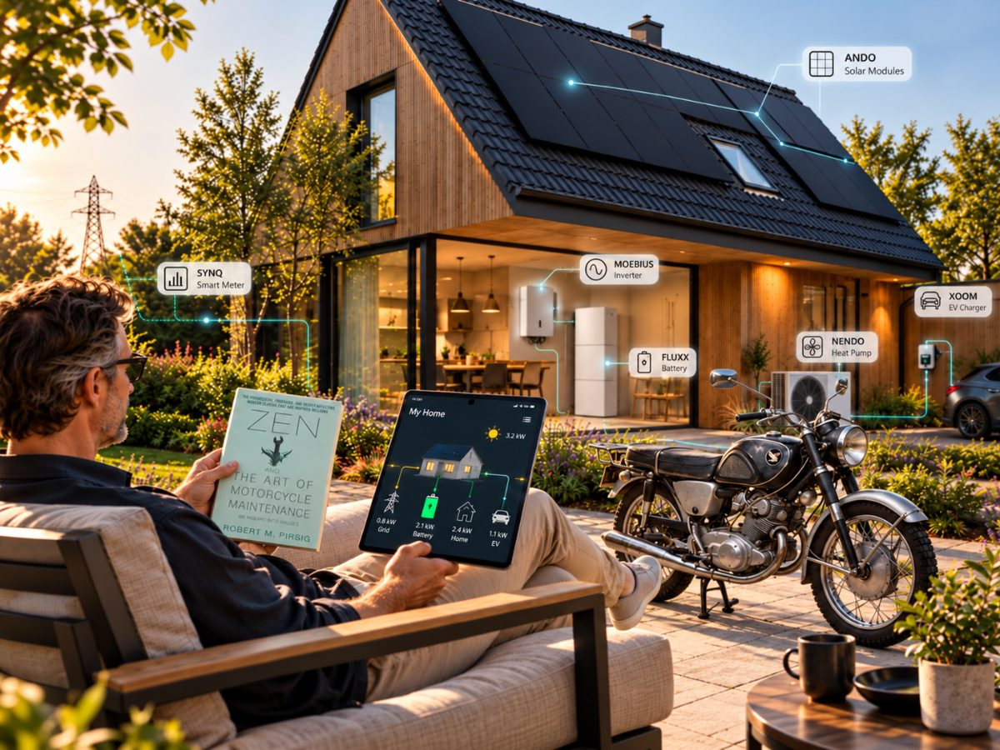
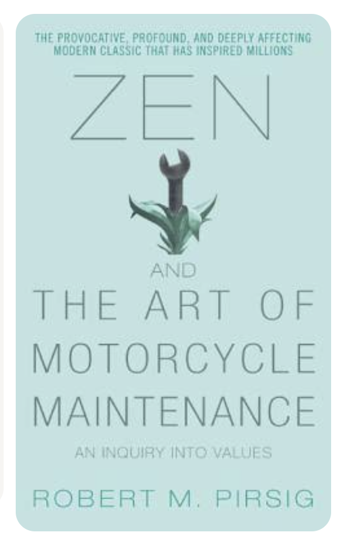

STRØHM.ENERGY combines industrial design, product engineering, manufacturing and digital technology within one coordinated product organisation.
We start with the problem people need to solve. Then we develop the product and the connections needed to solve it.
We design. We engineer. We manufacture.
Better energy is not a slogan. It is the result of good configuration and the careful design of each product and the system around it.
Around Mathieu is a young international team of engineers, designers, developers and digital specialists. Experience helps us avoid old mistakes; new talent challenges old assumptions.
We study how products are selected, installed, commissioned and used.
Industrial design, interaction design and technical architecture are developed together.
Products are engineered to our own specification.
Performance, compatibility, safety and country requirements are verified for each intended market.
Production follows a controlled process. Every product is built to our specification and released only after our own testing and quality checks.
Products are incorporated into the wider STRØHM.ENERGY and EMON ecosystem.
Documentation, warranty, product identity and service information stay connected throughout the product lifecycle.
Products are engineered to our own specification, together with specialised development partners.
Production is managed through our controlled production network. Every product is built to our specification and released only after our own testing and quality checks.
Many energy products exist out of habit. They are remade, lightly adjusted and resold, while installers and users keep working around the same limitations. We do not accept that.
We take an existing product only as a point of departure. We study what is missing, what is unnecessarily complicated and what can be made better — technically, practically or visually.
Then we add functions, simplify the installation and connect the product to the rest of the system.
When an existing concept offers too little room to improve, we do not make a cosmetic variant. We develop a new concept.
Every STRØHM.ENERGY product must add at least four clear advantages over what already exists. Otherwise it does not enter our portfolio.
We take inspiration from design, engineering, nature and real-world use. But every idea must lead to a practical improvement. For installers, that means products that are easier to specify, faster to install, simpler to commission and clearer to service.
Connections are positioned logically. Documentation stays linked to the product. Software reduces repetitive work. Products are designed to work together rather than leaving compatibility problems to the installer.
We do not design differently for appearance alone. We redesign what creates unnecessary work, confusion or waste.
The same four questions apply to every STRØHM.ENERGY product, alongside “Six improvements, or no product”.
Identify the conventional industry assumption the product challenges.
Define the actual technical, functional or design difference.
Demonstrate measurable improvements in performance, installation, reliability or usability.
Give the product a coherent identity while maintaining compatibility with the wider ecosystem.
We aim for at least four demonstrable advantages over the product we started from.
Advantages are measured in installation time, reliability, cost of ownership and service access.
We do not manufacture or bring a product to market unless we can identify at least six meaningful improvements over comparable competing products.
Each must deliver clear added value through better performance, easier installation, simpler commissioning, stronger integration, improved serviceability or a better user experience.
Every difference must have a purpose. Every improvement must be demonstrable.
Example. Each product’s own comparison and evidence are added once supplied.
Installers lose time wiring and configuring a home battery on site, and service needs the unit to be taken apart.
Pre-configured at the factory, recognised by EMON with one QR scan, with front service access.
Shorter commissioning and faster service. Measured figures follow once confirmed.
Independent thinking. Engineering discipline. Energy as one system.
We were never interested in fitting into somebody else’s definition of an energy product.
Every unconventional decision must be supported by engineering, testing, safety, manufacturability and measurable value. We challenge convention when there is a better way to engineer the result.
We do not simply select existing products and place our name on them. We study how products are designed, manufactured, installed and used, identify opportunities for improvement, and develop solutions around practical requirements.
Our approach brings together experienced manufacturing knowledge, creative product development, engineering discipline and international technical collaboration.
Every product begins with a clear function, practical requirements and a defined role in the wider energy ecosystem.
Manufacturing, production engineering, testing and quality control are integral to how we bring our products to market.
Hardware, communication and digital technologies are developed to work together rather than operate as isolated products.
STRØHM.ENERGY combines product development, engineering and manufacturing to create energy technologies that are designed for practical installation, reliable operation and long-term use.
Punk, for us, does not mean chaos. It means refusing to accept an existing norm automatically — thinking independently, questioning unnecessary rules and building something that clearly works better. We combine that attitude with engineering, quality control, automation and responsibility.
We are not different to be different. We are different where the difference counts.
We are product freaks.
We care about the position of a connector, the sound of a mechanism, the logic of an interface, the way a product is opened, installed, repaired and understood. A product has more to say than its specification sheet.
We are creative, direct and persistent. Good ideas should not disappear into meetings, procedures or the sentence "that is just how the market does it." We test quickly, improve continuously and keep working until the product has a real reason to exist.
Speed does not mean working carelessly. It means deciding faster, prototyping faster and making problems visible earlier.
Punk taught us something that goes far beyond music or fashion: you do not have to accept the categories, conventions and limitations that others have created.
We apply that thinking to renewable energy.
Why should an inverter look and operate like every other inverter? Why should a battery be an anonymous metal cabinet? Why should a solar panel become just another commodity? And why should an installer need five different applications to make one energy system work?
We question those assumptions.
We study existing products, identify their weaknesses and look for ways to make them more functional, more understandable and better connected.
But independence without technical discipline is just another form of disorder.
Every unconventional decision must be supported by engineering, testing, safety, manufacturability and measurable value.
We do not challenge convention for attention.
We challenge convention when there is a better way to engineer the result.
STRØHM.ENERGY exists because energy technology became predictable, fragmented and unnecessarily complicated.
Too many products are designed by committees, assembled from standard parts and presented with different branding. We prefer to question the starting point. Why must an inverter look like every other inverter? Why should commissioning still take hours? Why are technical documents separated from the product? Why do installers have to solve compatibility problems that manufacturers should have solved first?
We dare to think outside the established category. There is a certain punk attitude in that. Not rebellion for effect, but the willingness to ignore conventions that no longer make sense.
Pick a product to see its machines, production steps, tests and release checks.
TEST AND QUALITY PROCESSES TO BE DESCRIBED ONCE VERIFIED. TO CONFIRM
From material selection and engineering to automated production, commissioning and warranty, quality is built into the complete product journey — not added during final inspection.
Every detail has a consequence. A poorly positioned connector increases installation time. An unclear instruction creates avoidable mistakes. An inaccessible component makes servicing harder. So we evaluate the complete product — not only its appearance or headline specifications.
Some quality is immediately visible: proportion, surface, material, fit and finish. Some only proves itself in the field: cable routing, thermal behaviour, software stability, documentation and service. We pay attention to both.
There is a little of Zen and the Art of Motorcycle Maintenance in the way we think about products.
A technically correct product can still be badly conceived. Real quality appears in the relationship between design, engineering, manufacturing, use and maintenance.
You notice it when a product is understandable before reading the manual.
When the installer can reach every connection. When the interface explains what is happening. When documentation remains connected to the physical product. When servicing the product does not require dismantling the entire installation.
These details are not secondary. They are the product.
A good product performs its function. A good system makes every product work better together.
Inspired by the philosophy of Robert M. Pirsig’s Zen and the Art of Motorcycle Maintenance, we believe that true quality requires more than technical correctness.
It requires understanding.
Understanding how a component works, why it was designed a certain way, how people interact with it, and how it behaves as part of something larger.
A beautifully designed product is not necessarily a good system. An efficient inverter, a reliable battery or an intelligent energy meter may each perform their individual functions perfectly. Yet the quality of the complete installation depends on how they communicate, respond and work together.
This is where our philosophy becomes engineering.
At STRØHM.ENERGY, we design, engineer and manufacture products with their relationships in mind.
ANDO and PROP generate energy. MOEBIUS converts it. FLUXX stores it. SYNQ measures it. OZZY provides intelligent switching. EMON brings these functions together through monitoring, coordination and control.
Connected applications, from NENDO heat pumps and OGO water heating to XOOM EV charging, AIRO ventilation and other energy-consuming products, become part of a wider energy system.
Each product has a purpose. Each connection has a consequence. Each design decision influences the performance of the whole.
We believe quality must be considered at every level: in the smallest mechanical detail, the electronic architecture, the software interface, the installation process and the long-term behaviour of the system.
This requires both analytical precision and human understanding.
It means designing products that engineers can trust, installers can work with and people can use without unnecessary complexity.
We do not see individual components as the final result.
We see the system they become.
Understand every component.
Design every connection.
Improve the whole.


Robert M. Pirsig, Zen and the Art of Motorcycle Maintenance: An Inquiry into Values.ILLUSTRATIONS ARE CONCEPTUAL, NOT OFFICIAL PRODUCT IMAGES OR VALIDATED TECHNICAL DRAWINGS. PHOTOGRAPHY TO CONFIRM
Our unconventional thinking is matched by a very pragmatic approach: every repeatable process should be automated, connected and traceable.
That begins in production, where robotics, digital work instructions and controlled testing improve consistency and efficiency. It continues through purchasing, ordering, logistics, delivery, commissioning, documentation, warranty registration and system monitoring.
From the moment an order is placed until the product is operating in the field, each step should happen automatically, produce a clear record or trigger a defined human action.
Information should not need to be entered repeatedly. Documents should not disappear between departments. Customers should not need to chase updates that the system already knows.
Our website, ordering tools and project workflows follow the same principle. They should be clear enough to understand without explanation and structured enough to keep every participant working in the same way.
This approach requires discipline. We are selective about who we work with. Every project must use the agreed digital processes, provide the required project information and complete commissioning and documentation correctly.
Every project uses agreed digital workflows, shared project information and complete commissioning records. STRØHM.ENERGY provides clear tools, training and specialist support.
But automation does not mean anonymity.
When a real conversation is needed, you speak to a real person who understands the product, the project or the market. We communicate directly by video, telephone, email and in-person meetings. Specialists remain accessible, and responsibility stays visible.
If someone prefers informal orders, missing records and improvised workflows, STRØHM.ENERGY is probably not the right choice. We are comfortable saying that. A coordinated energy system cannot be delivered through uncoordinated processes.
You are unlikely to find us spending large budgets on traditional trade-show stands. We would rather invest that time and money in better products, clearer digital information, online demonstrations, technical training and direct meetings with the people who actually use and specify our systems.
Automate the process. Keep the relationship personal.
This approach requires discipline. We are selective about the installers, distributors and project partners we work with. Partners must be willing to use the agreed digital processes, provide the required project information and complete commissioning and documentation correctly.
Partners use agreed digital workflows, share project information and complete commissioning records. STRØHM.ENERGY provides clear tools, training and specialist support.
If someone prefers informal orders, missing records and improvised workflows, STRØHM.ENERGY is probably not the right partner. We are comfortable saying that. A coordinated energy system cannot be delivered through uncoordinated processes.